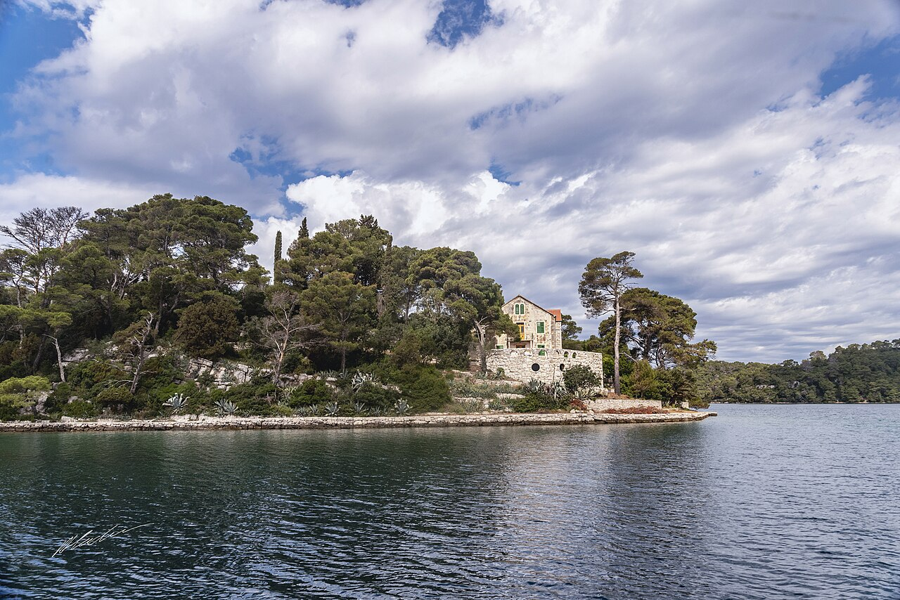

사라예보 모스타르
확인- 수단
- 기차 · ŽFBH 탈고 열차(하루 2회) · 버스
- 소요
- 약 2시간 5분
- 환승
- 직행
네레트바 협곡을 지나는 경치 좋은 철도. 버스는 2시간 30분, 편수가 더 많습니다.
발칸 · 숨겨진 소도시
Sarajevo – Mostar – Trebinje – Dubrovnik
사라예보에서 사흘, 헤르체고비나 소도시에서 사흘. 마지막에 두브로브니크로 빠져나옵니다.



보스니아를 스쳐 지나가는 대신 중심에 둡니다. 사라예보의 오스만 장터와 포위전의 기억, 모스타르 근교의 수도원과 폭포, 플라타너스 광장의 트레비네를 천천히 봅니다.


선은 도시를 잇는 순서만 나타낸 직선이며 실제 철도·도로 경로가 아닙니다. 지도: © OpenStreetMap 기여자.
현지 8박 9일 · 사라예보 2박 → 모스타르 2박 → 트레비네 2박 → 두브로브니크 2박. 위의 기간 탭이 여럿이면 눌러서 일정을 바꿔 볼 수 있습니다.
도착 인천 → 사라예보 공항. 도착일은 숙소 주변 위주로 가볍게.
바슈차르시야·세빌리 분수 → 가지 후스레브 베그 모스크 → "문화가 만나는 선" → 라틴교 → 시청사(비예치니차) → 노란 요새 일몰.
체바피와 보스니아 커피를 꼭 맛보세요.
숙박: 사라예보
희망의 터널 박물관 → 전쟁 아동 박물관 또는 갤러리 11/07/95 → 트레베비치산 케이블카·옛 봅슬레이 트랙.
숙박: 사라예보
이동 사라예보 → 모스타르 · 기차 약 2시간 5분 확인
쿠윤질루크 장터 → 스타리 모스트 다이빙 구경 → 코스키 메흐메드 파샤 모스크 첨탑 전망 → 비셰비차 저택.
당일 관광객이 떠난 저녁에 다리 조명이 가장 예쁩니다.
숙박: 모스타르
블라가이 수도원(강 수원) → 포치텔 성곽 마을 → 크라비차 폭포. 투어나 택시 대절이 편합니다.
숙박: 모스타르
이동 모스타르 → 트레비네 · 버스 약 2시간 30분 확인 필요
구시가지 → 플라타너스 광장 시장 → 아르슬라나기치 다리 → 헤르체고바츠카 그라차니차 언덕 → 와이너리 시음.
두브로브니크에서 30km. 물가가 훨씬 낮아 쉬어 가기 좋습니다.
숙박: 트레비네
트레비네에서 못 본 곳을 다시 찾거나 카페·시장에서 쉬어 가는 날.
숙박: 트레비네
이동 트레비네 → 두브로브니크 · 버스 약 50분 확인 필요
필레 문 → 스트라둔 대로 → 성벽 한 바퀴(약 2km) → 스르지산 케이블카 일몰.
성벽은 개장 직후나 늦은 오후가 덜 덥고 덜 붐빕니다.
숙박: 두브로브니크
로브리예나츠 요새 → 로크룸섬(배 15분) 수영·산책 → 반예 해변 → 구항구 저녁.
숙박: 두브로브니크
오전에 못 본 곳을 둘러보고 공항으로 이동합니다. 귀국편은 대부분 다음 날 한국에 도착합니다.
네레트바 협곡을 지나는 경치 좋은 철도. 버스는 2시간 30분, 편수가 더 많습니다.
편수가 적으니 터미널에서 전날 확인하세요.
30km 거리지만 버스가 드뭅니다. 택시(약 40분)를 나눠 타는 경우가 많습니다. 국경 통과, 여권 필요.
소요시간은 2026-11-21에 확인한 일반적인 범위입니다. 확인 2026-11 조사에서 소요시간·운행을 확인한 구간 · 일반 정기 노선으로 알려진 구간. 날짜별 시간표는 확인하지 않음 · 확인 필요 편수가 적거나 계절 운행이거나 자료마다 값이 다른 구간.
국경 보스니아(비솅겐) → 크로아티아(솅겐) 입국 심사가 있습니다.
인천공항 출발 기준 · 들어가는 공항과 나오는 공항이 다른 다구간(오픈조) 항공권 추천
이스탄불·비엔나·뮌헨·프랑크푸르트 등에서 1회 경유.
이스탄불·프랑크푸르트·뮌헨·비엔나 등에서 1회 경유. 겨울에는 편수가 크게 줄어 2회 경유가 될 수 있습니다.
5·10월
1~2월(사라예보 스모그·눈), 7~8월 한낮 더위
진한 칸이 추천 월입니다 · 사라예보는 겨울에 분지 스모그가 심한 날이 있습니다. 8월 사라예보 영화제.
이 루트를 고르고 기간·추천 월을 정할 때 참고한 자료입니다(2026년 11월 확인). 여행사 상품 가격·일정은 출발일마다 다릅니다.

.jpg?width=960)
.jpg?width=960)
중기(6~7박) · 1개국 · 추천 5·9월
프라하 다음 체코. 관광객이 적은 바로크 대학 도시와 와인 지대를 기차로 돕니다.


중기(5~6박) · 1개국 · 추천 4·5·10월
온천 콜로네이드와 필스너 맥주의 고향을 도는 체코 서쪽 일주.


중기(6~7박) · 1개국 · 추천 6·7·8월
부다페스트만 보고 떠나기 아쉬운 사람을 위한 와인 마을과 호수 휴양.


중기·장기(7~8박) · 2개국 · 추천 7·8·9월
비엔나로 들어가 슬로바키아를 기차로 가로질러 타트라 산을 걷고 부다페스트로 나오는 코스.
정보 확인일 2026-11-21 · 루트·교통·항공 정보는 바뀔 수 있습니다. 잘못된 내용을 발견하면 학회로 알려 주세요.